Public health meets
data-driven insight
MD & MSc BHI candidate with hands-on experience in health informatics, telemedicine, and analytical dashboards — turning messy health data into actionable decisions across Southeast Asia and beyond.
About Me
Background, skills, and the story behind the work.
Hi — I'm Aung Thura Htoo, a public health practitioner and data analyst based in Thailand. I hold an MD and a Bachelor of Health Science, and I'm currently pursuing an MSc in Biomedical & Health Informatics at Mahidol University.
My work spans health information systems, telemedicine, and interactive data analytics. I've worked in IDP camps and border health settings, and I currently serve as a Health Information System Technical Consultant at Mae Tao Clinic.
I'm skilled in improving data quality, clinical reporting, and decision-making using R, SQL, Power BI, and Looker Studio. I care deeply about applying data science to real-world public health challenges in low-resource and crisis settings.
Skills
Dashboard
Live metrics and monitoring across active projects and systems.
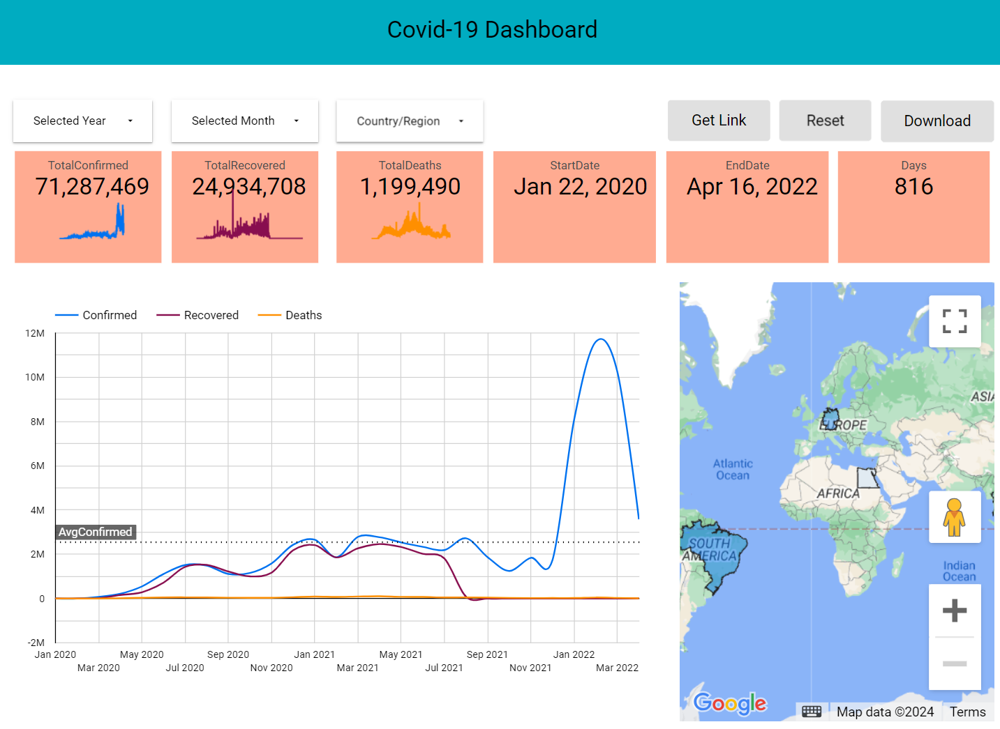
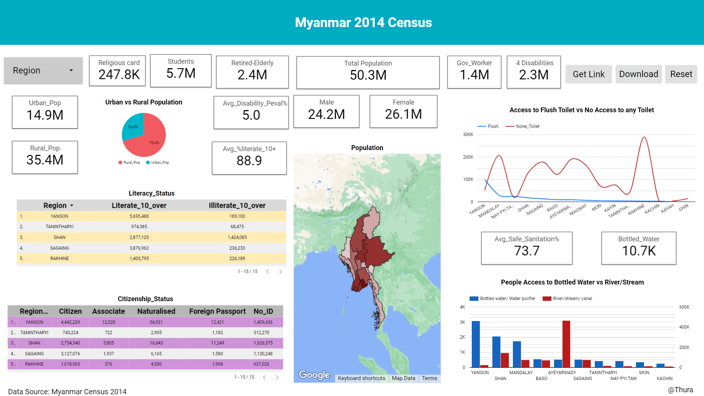
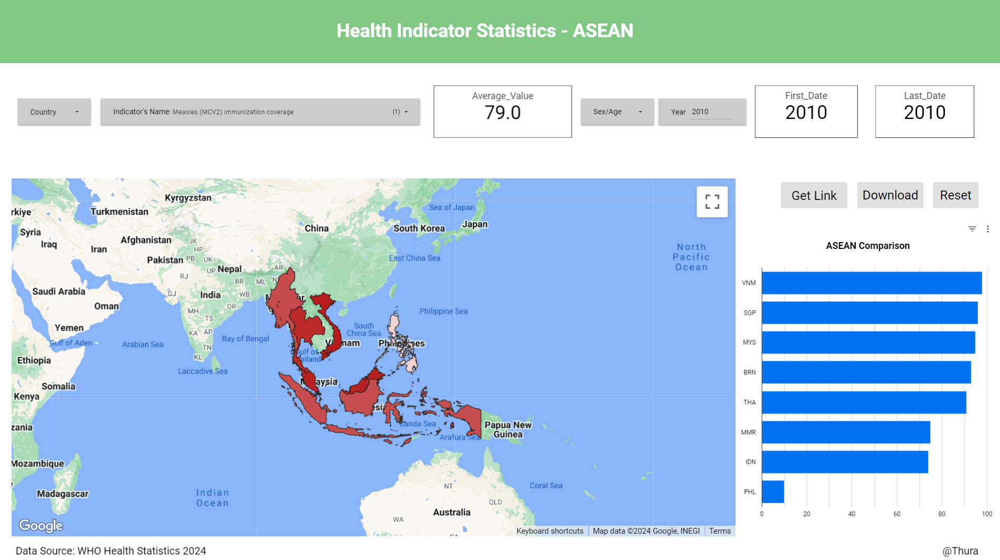
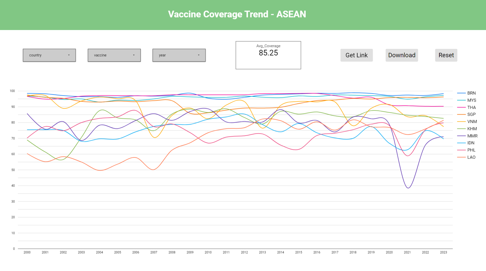
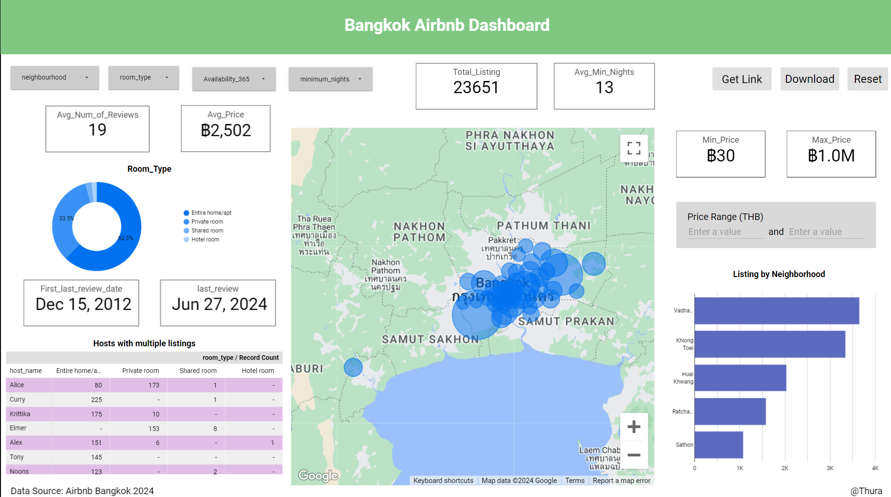
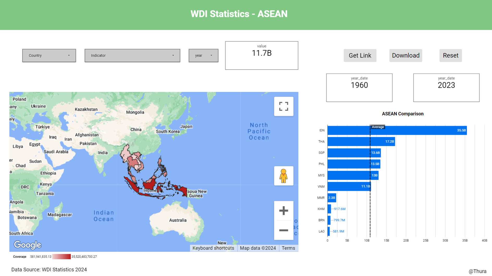
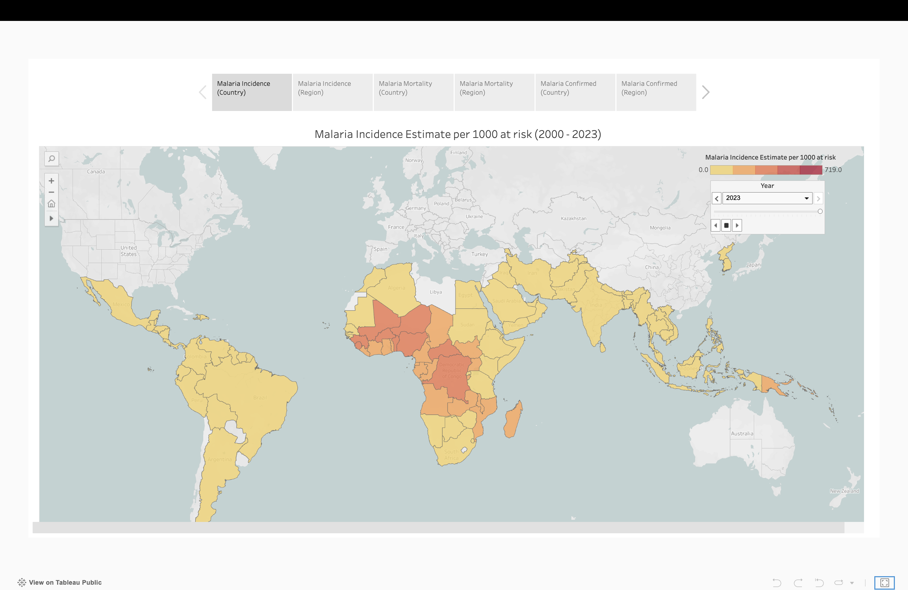
Data Projects
Step-by-step data analysis using R and Python — from import to insight.
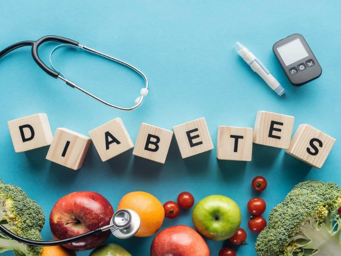
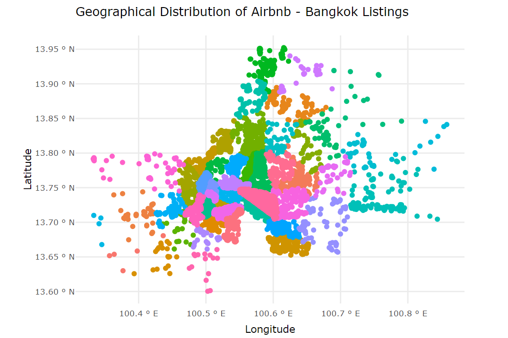
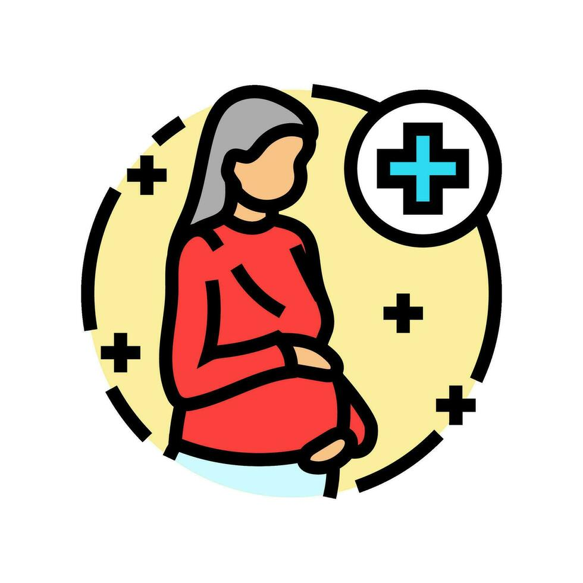
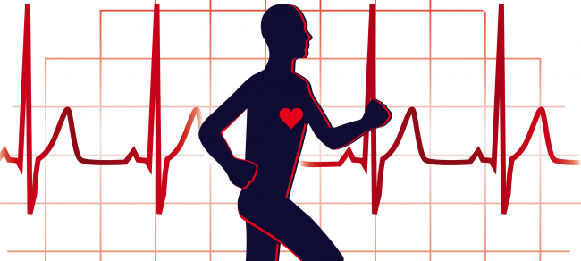
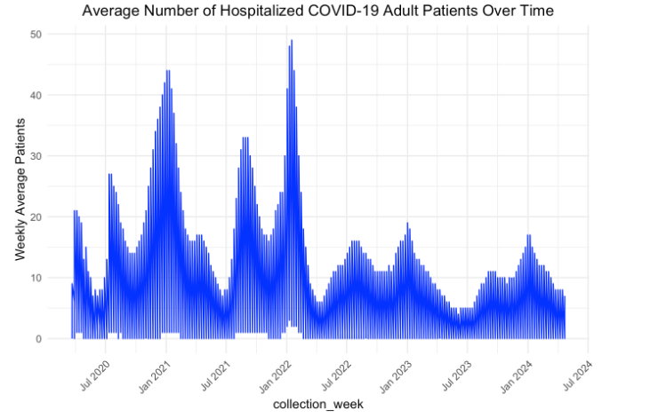
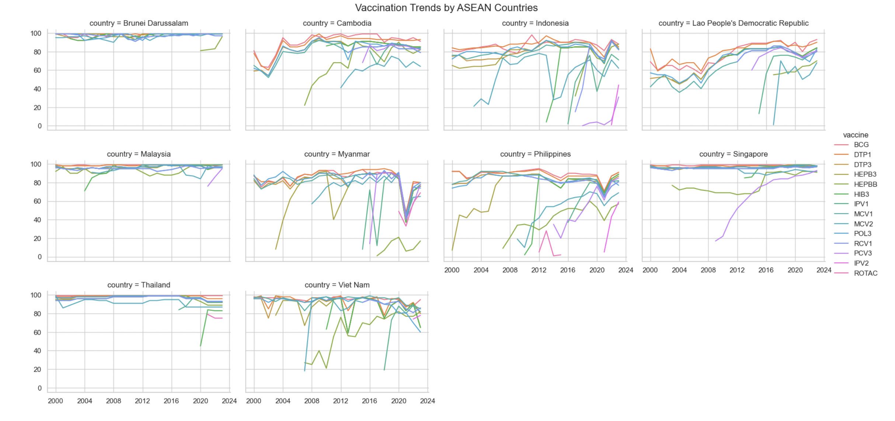
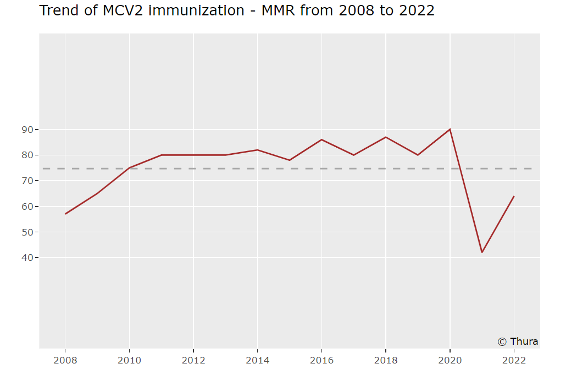
Research
Peer-reviewed publications in public health, tropical diseases, and digital health.
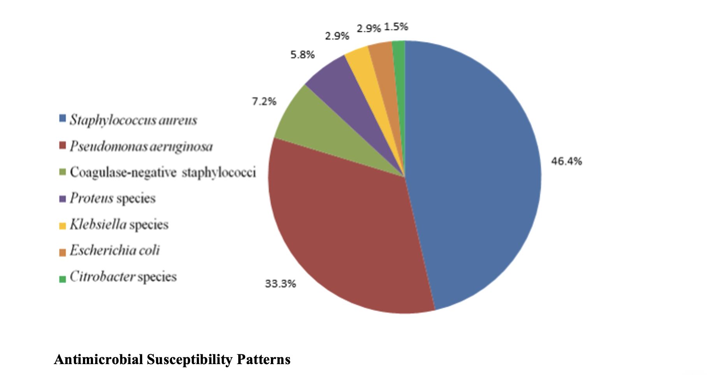
Books
Books that shaped how I think about health, data, and the world.